11_RNAscope_cytokine_communities
SandraTietscher
2020-11-03
Last updated: 2020-11-11
Checks: 7 0
Knit directory: BCexh_IMC/
This reproducible R Markdown analysis was created with workflowr (version 1.6.2). The Checks tab describes the reproducibility checks that were applied when the results were created. The Past versions tab lists the development history.
Great! Since the R Markdown file has been committed to the Git repository, you know the exact version of the code that produced these results.
Great job! The global environment was empty. Objects defined in the global environment can affect the analysis in your R Markdown file in unknown ways. For reproduciblity it’s best to always run the code in an empty environment.
The command set.seed(12345) was run prior to running the code in the R Markdown file. Setting a seed ensures that any results that rely on randomness, e.g. subsampling or permutations, are reproducible.
Great job! Recording the operating system, R version, and package versions is critical for reproducibility.
Nice! There were no cached chunks for this analysis, so you can be confident that you successfully produced the results during this run.
Great job! Using relative paths to the files within your workflowr project makes it easier to run your code on other machines.
Great! You are using Git for version control. Tracking code development and connecting the code version to the results is critical for reproducibility.
The results in this page were generated with repository version e814a99. See the Past versions tab to see a history of the changes made to the R Markdown and HTML files.
Note that you need to be careful to ensure that all relevant files for the analysis have been committed to Git prior to generating the results (you can use wflow_publish or wflow_git_commit). workflowr only checks the R Markdown file, but you know if there are other scripts or data files that it depends on. Below is the status of the Git repository when the results were generated:
Ignored files:
Ignored: analysis/.Rhistory
Untracked files:
Untracked: CD11c_CD68_scatter.png
Untracked: analysis/XX_RNApanel_neighbourhood.Rmd
Untracked: data/RNAseq_Tcells.rds
Untracked: data/RNAseq_epithelial.rds
Untracked: data/ROI_info_HIER.csv
Untracked: data/ROI_info_RNAscope.csv
Untracked: data/cpout/
Untracked: data/masks/
Untracked: heatmap_markerexpression_myeloid_sub.png
Untracked: neighbourhood_myeloid_split_TLS.png
Untracked: output/ProteinPanel/
Untracked: output/RNApanel/
Untracked: output/TLS_score_25samples.png
Untracked: output/sce_ProteinPanel_afterQC.rds
Untracked: output/sce_ProteinPanel_initial.rds
Untracked: output/sce_ProteinPanel_initial_TLSrevised.rds
Untracked: output/sce_RNApanel_afterQC.rds
Untracked: output/sce_RNApanel_initial.rds
Untracked: output/sce_RNApanel_initial_TLSrevised.rds
Untracked: test_Treg_enrichment.png
Unstaged changes:
Modified: analysis/07_proteinPanel_TNK_analysis.Rmd
Modified: analysis/08_proteinPanel_neighbourhood.Rmd
Note that any generated files, e.g. HTML, png, CSS, etc., are not included in this status report because it is ok for generated content to have uncommitted changes.
These are the previous versions of the repository in which changes were made to the R Markdown (analysis/11_RNAscope_cytokine_communities.Rmd) and HTML (docs/11_RNAscope_cytokine_communities.html) files. If you’ve configured a remote Git repository (see ?wflow_git_remote), click on the hyperlinks in the table below to view the files as they were in that past version.
| File | Version | Author | Date | Message |
|---|---|---|---|---|
| Rmd | e814a99 | SandraTietscher | 2020-11-11 | Add script for cytokine cluster/community analysis |
Introduction
This script uses Tobi’s functions to detect interaction networks of a given celltype (here: cytokine producing cells) and defines these networks as clusters. Once a cluster is defined, an algorithm screens the neighbourhood of those clusters to identify cells within/surrounding a cluster. These cells are defined as the community of a cluster.
Preparations
Load packages, helper functions and data
sapply(list.files("code/helper_functions", full.names = TRUE), source) code/helper_functions/detect_mRNA_expression.R
value ?
visible FALSE
code/helper_functions/DistanceToClusterCenter.R
value ?
visible FALSE
code/helper_functions/findClusters.R
value ?
visible FALSE
code/helper_functions/findCommunity.R
value ?
visible FALSE
code/helper_functions/validityChecks_communities.R
value ?
visible FALSE
code/helper_functions/validityChecks.R
value ?
visible FALSE library(SingleCellExperiment)
library(ggplot2)
library(scater)
library(igraph)
library(reshape2)
library(cowplot)
library(ggridges)
library(tidyverse)
library(viridis)
library(dplyr)
library(sp)
library(sf)
library(RANN)
library(concaveman)
library(ggpubr)
sce = readRDS(file = "output/RNApanel/sce_RNApanel_cytokines_subtypes.rds")Clusters/Communities - General
Find clusters of cytokine-producing cells and define communities
A cluster of cytokine-producing cells consists of cells (min. 10) that have a max distance of 20µm to the next cytokine producing cells. A community is defined by cells which surround (max 25µm) the border of a cluster (definded by the convex hull of the cluster).
# average cell diameter
sqrt(mean(sce$Area)/pi)[1] 5.389262sqrt(median(sce$Area)/pi)[1] 5.077706quantile(sqrt(sce$Area/pi)) 0% 25% 50% 75% 100%
1.595769 4.029120 5.077706 6.154582 13.808245 # find cytokine clusters
sce <- findClusters(sce, sce[,colData(sce)$cytokine == TRUE]$cellID ,
'cellID',
'Center_X', 'Center_Y',
'ImageNumber',
distance = 20,
min_clust_size = 10,
output_colname = "cytokine_cluster")Time difference of 2.275212 mins
[1] "clusters successfully added to sce object"# number of cytokine clusters
length(unique(sce$cytokine_cluster))[1] 312# define cells within/surrounding a cluster of cytokine producing cells
sce <- findCommunity(sce,
'cellID',
'Center_X', 'Center_Y',
'ImageNumber',
'cytokine_cluster',
distance = 25,
output_colname = "cytokine_community")Time difference of 1.26524 mins
[1] "communities successfully added to sce object"# number of cytokine communities
length(unique(sce$cytokine_community))[1] 312Detect Clusters and Commmunities for Single cytokines
start = Sys.time()
cytokine_channels = c("CCL4", "CCL18", "CSF1", "CXCL10", "CXCL13_mRNA", "CCL2", "CCL22", "CXCL9", "CCL17", "CCL5")
cur_sce <- data.frame(colData(sce))
# loop through all cytokines
for(i in cytokine_channels) {
# find clusters
sce <- findClusters(input_sce = sce,
IDs_of_interest = cur_sce[cur_sce[,names(cur_sce) == paste0(i, "_expression")] == 1,]$cellID,
'cellID',
'Center_X', 'Center_Y',
'ImageNumber',
distance = 25,
min_clust_size = 3,
output_colname = paste(tolower(i), "only_clust", sep = ""))
# define cells within/surrounding a cluster of cytokine producing cells
sce <- findCommunity(sce,
'cellID',
'Center_X',
'Center_Y',
'ImageNumber',
paste(tolower(i), "only_clust", sep = ""),
distance = 30,
output_colname = paste(tolower(i), "only_comm", sep = ""))
} Time difference of 4.301546 secs
[1] "clusters successfully added to sce object"
Time difference of 32.83985 secs
[1] "communities successfully added to sce object"
Time difference of 4.523182 secs
[1] "clusters successfully added to sce object"
Time difference of 50.26467 secs
[1] "communities successfully added to sce object"
Time difference of 7.547558 secs
[1] "clusters successfully added to sce object"
Time difference of 42.61357 secs
[1] "communities successfully added to sce object"
Time difference of 12.51743 secs
[1] "clusters successfully added to sce object"
Time difference of 1.615311 mins
[1] "communities successfully added to sce object"
Time difference of 5.834062 secs
[1] "clusters successfully added to sce object"
Time difference of 48.6242 secs
[1] "communities successfully added to sce object"
Time difference of 11.08086 secs
[1] "clusters successfully added to sce object"
Time difference of 1.438806 mins
[1] "communities successfully added to sce object"
Time difference of 2.663429 secs
[1] "clusters successfully added to sce object"
Time difference of 34.40938 secs
[1] "communities successfully added to sce object"
Time difference of 11.81897 secs
[1] "clusters successfully added to sce object"
Time difference of 1.388502 mins
[1] "communities successfully added to sce object"
Time difference of 1.730912 secs
[1] "clusters successfully added to sce object"
Time difference of 15.20213 secs
[1] "communities successfully added to sce object"
Time difference of 7.319765 secs
[1] "clusters successfully added to sce object"
Time difference of 1.090776 mins
[1] "communities successfully added to sce object"end = Sys.time()
print(end-start)Time difference of 10.42962 minsSave SCE object
saveRDS(sce, file = "output/RNApanel/sce_RNApanel_cytokines_communities.rds")Cluster size distribution
#For general cytokine-expressing cluster
cytokine_cluster <- as.data.frame(table(sce$cytokine_cluster)[-1])
ggplot(cytokine_cluster, aes(x=Freq))+
geom_histogram(binwidth = 10)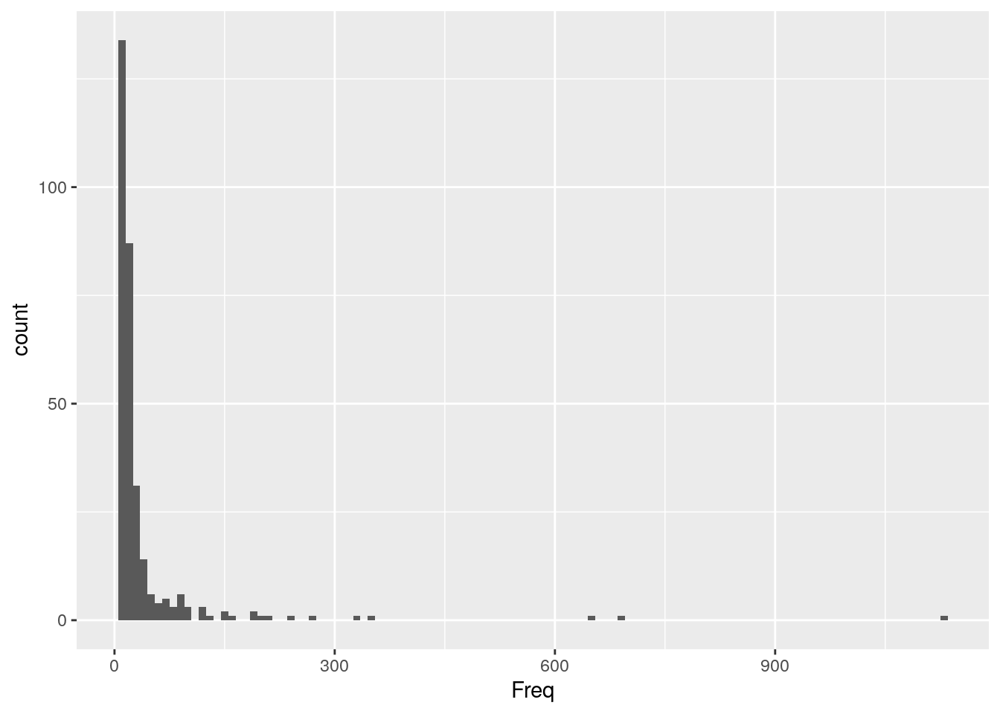
#For individual single-cytokine clusters
cur_sce <- data.frame(colData(sce))
clust_colnames <- colnames(cur_sce)[grep("only_clust", colnames(cur_sce))]
p.list <- list()
for (i in clust_colnames) {
cluster <- as.data.frame(table(cur_sce[,i])[-1])
p.list[[i]] <- ggplot(cluster, aes(x=Freq))+ geom_histogram(binwidth = 1) + ggtitle(i) + ylab("Cluster size")
}
plot_grid(plotlist = p.list, ncol = 4)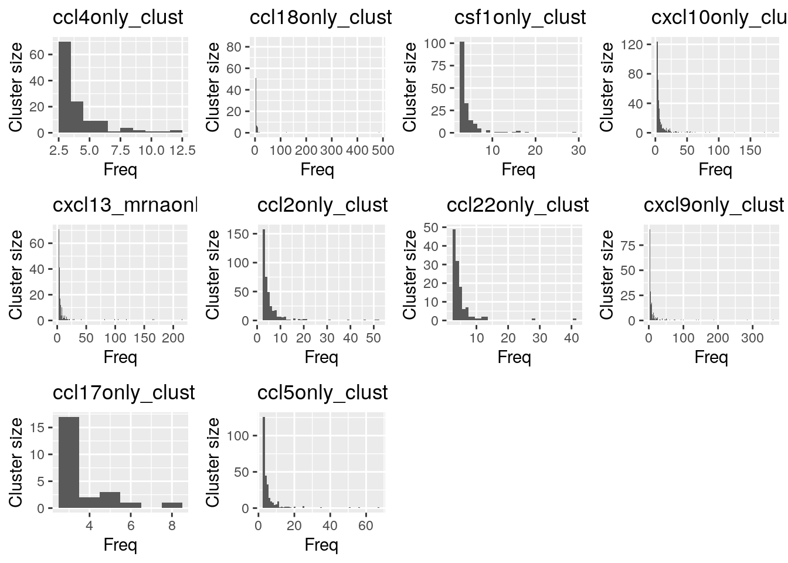
Community size distribution
#For general cytokine-expressing cluster
cytokine_community <- as.data.frame(table(sce$cytokine_community)[-1])
ggplot(cytokine_community, aes(x=Freq))+
geom_histogram(binwidth = 10)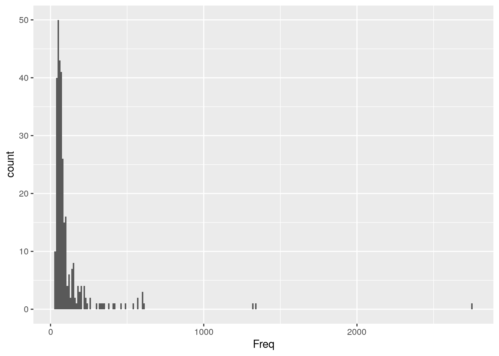
#For individual single-cytokine clusters
comm_colnames <- colnames(cur_sce)[grep("only_comm", colnames(cur_sce))]
p.list <- list()
for (i in comm_colnames) {
comm <- as.data.frame(table(cur_sce[,i])[-1])
p.list[[i]] <- ggplot(comm, aes(x=Freq))+ geom_histogram(binwidth = 1) + ggtitle(i) + ylab("Community size")
}
plot_grid(plotlist = p.list, ncol = 4)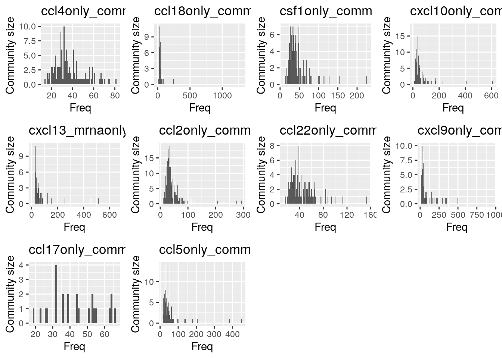
Cytomapper: cytokine cluster plots
library(cytomapper)
# Load mask files
path.to.images <- "data/masks/RNApanel_masks"
all_masks <- loadImages(path.to.images, pattern = "_mask.tiff")
# Add image number
mcols(all_masks)$ImageNumber <- c(1:77)
# Scale images
all_masks <- scaleImages(all_masks, 2^16-1)
head(unique(as.numeric(all_masks[[1]])))[1] 0 1 2 3 4 5cur_img <- getImages(all_masks, "20200817_ST_BCexh_R_TBB165_s0_p3_r1_a1_ac_ilastik_s2_Probabilities_mask")
# Plot cells
plotCells(cur_img, object = sce,
img_id = "ImageNumber", cell_id = "CellNumber",
colour_by = "ccl22only_clust")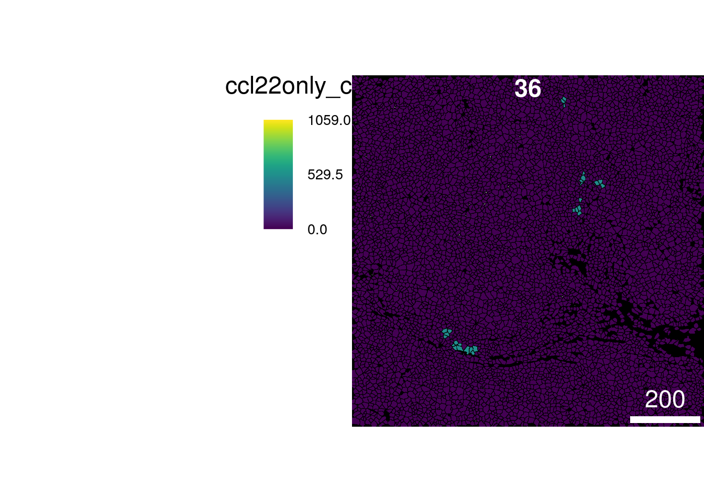
plotCells(cur_img, object = sce,
img_id = "ImageNumber", cell_id = "CellNumber",
colour_by = c("CCL22"), exprs_values = "exprs")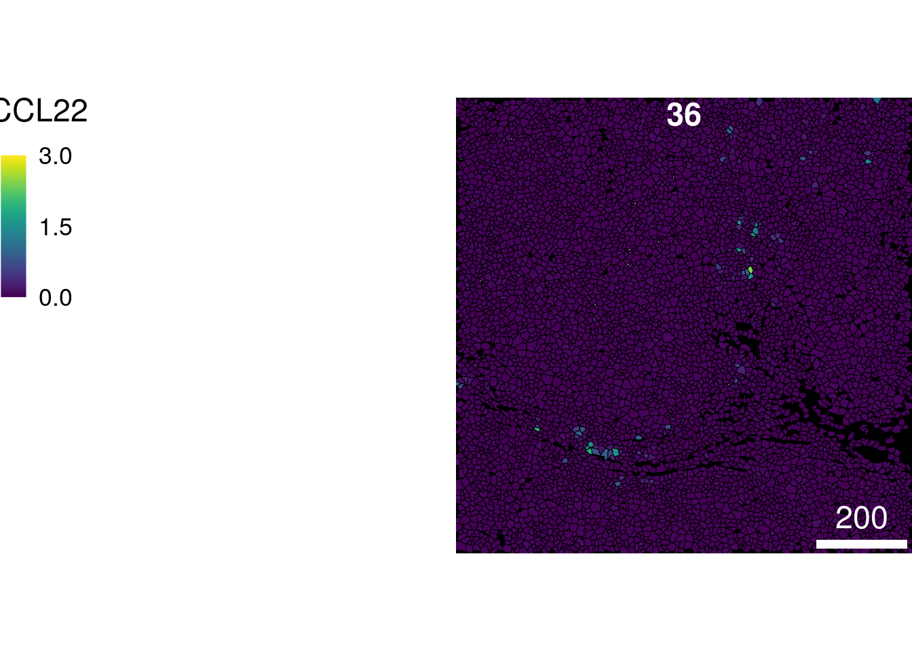
Cell type proportions
Cell type proportions in clusters
# For individual single-cytokine clusters
celltype_prop <- data.frame(celltype = names(prop.table(table(cur_sce[,"celltype"]))))
celltype_prop[,"all"] <- as.numeric(prop.table(table(cur_sce[,"celltype"])))
for (i in clust_colnames) {
cur_sce_i <- cur_sce[which(cur_sce[,i] != 0),]
prop_i <- as.data.frame(prop.table(table(cur_sce_i[,"celltype"])))
colnames(prop_i) <- c("celltype", i)
celltype_prop <- merge(celltype_prop, prop_i, by="celltype", all.x = TRUE)
}
celltype_prop[is.na(celltype_prop)] = 0
celltype_prop <- pivot_longer(celltype_prop, 2:12, names_to = "cluster", values_to = "celltype_proportion")
# Plot
ggplot(celltype_prop, aes(cluster, celltype_proportion, fill = celltype))+
geom_bar(stat = "identity")+
theme(axis.title.x=element_blank(),panel.background = element_blank(), axis.text.x = element_text(angle = 60, hjust = 1))+
ggtitle("Cell type proportions per cytokine cluster")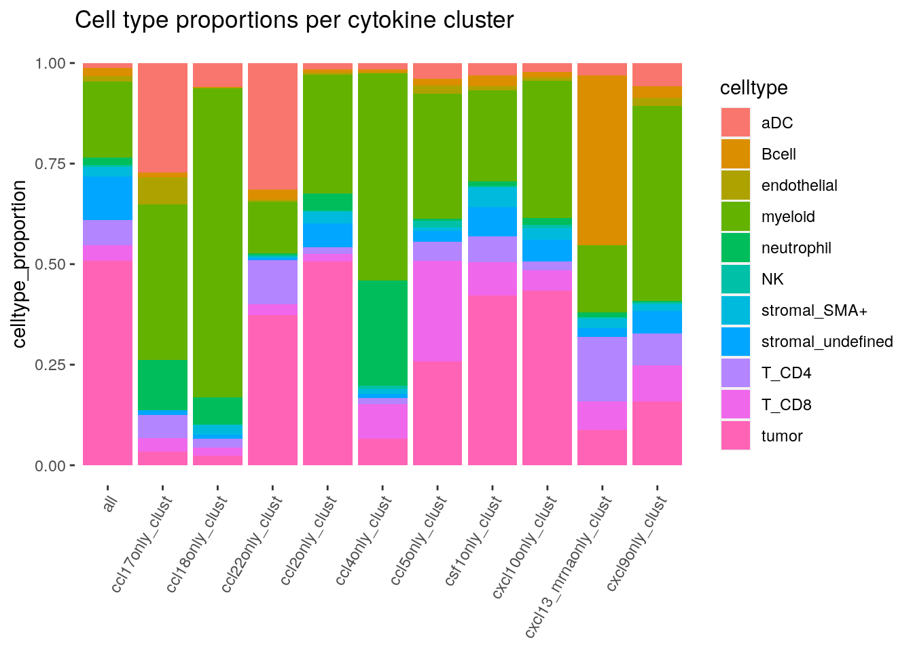
Cell type proportions in communities
# For individual single-cytokine communities: ALL CELLS IN THE COMMUNITY
celltype_comm <- data.frame(celltype = names(prop.table(table(cur_sce[,"celltype"]))))
celltype_comm[,"all"] <- as.numeric(prop.table(table(cur_sce[,"celltype"])))
for (i in comm_colnames) {
cur_sce_i <- cur_sce[which(cur_sce[,i] != 0),]
prop_i <- as.data.frame(prop.table(table(cur_sce_i[,"celltype"])))
colnames(prop_i) <- c("celltype", i)
celltype_comm <- merge(celltype_comm, prop_i, by="celltype", all.x = TRUE)
}
celltype_comm[is.na(celltype_comm)] = 0
celltype_comm <- pivot_longer(celltype_comm, 2:12, names_to = "cluster", values_to = "celltype_proportion")
# Plot
ggplot(celltype_comm, aes(cluster, celltype_proportion, fill = celltype))+
geom_bar(stat = "identity")+
theme(axis.title.x=element_blank(),panel.background = element_blank(), axis.text.x = element_text(angle = 60, hjust = 1))+
ggtitle("Cell type proportions per cytokine community")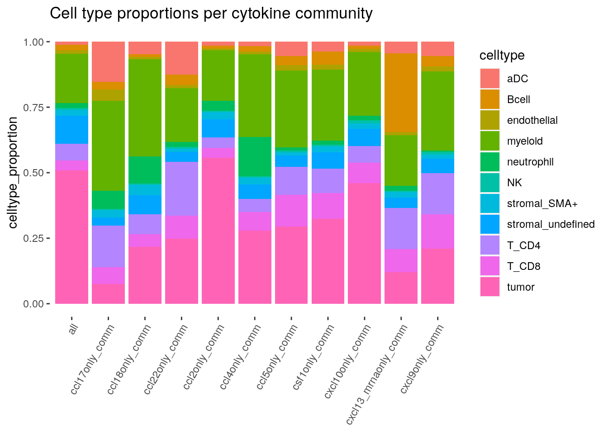
# For individual single-cytokine communities: ONLY CELLS IN THE COMMUNITY THAT ARE NOT ALSO IN THE CLUSTER
celltype_commonly <- data.frame(celltype = names(prop.table(table(cur_sce[,"celltype"]))))
celltype_commonly[,"all"] <- as.numeric(prop.table(table(cur_sce[,"celltype"])))
for (i in cytokine_channels) {
cur_sce_i <- cur_sce[which(cur_sce[,str_detect(colnames(cur_sce), regex(paste0(i,"only_clust"), ignore_case = TRUE))] == 0 & cur_sce[,str_detect(colnames(cur_sce), regex(paste0(i,"only_comm"), ignore_case = TRUE))] != 0),]
prop_i <- as.data.frame(prop.table(table(cur_sce_i[,"celltype"])))
colnames(prop_i) <- c("celltype", i)
celltype_commonly <- merge(celltype_commonly, prop_i, by="celltype", all.x = TRUE)
}
celltype_commonly[is.na(celltype_commonly)] = 0
celltype_commonly <- pivot_longer(celltype_commonly, 2:12, names_to = "cluster", values_to = "celltype_proportion")
# Plot
ggplot(celltype_commonly, aes(cluster, celltype_proportion, fill = celltype))+
geom_bar(stat = "identity")+
theme(axis.title.x=element_blank(),panel.background = element_blank(), axis.text.x = element_text(angle = 60, hjust = 1))+
ggtitle("Cells that are ONLY part of the respective cytokine community (not the cluster)")
Compare cell type proportions in clusters and communities
# Compare
celltype_prop$cluster <- celltype_commonly$cluster
celltype_prop$type <- "cluster"
celltype_commonly$type <- "community"
celltype_comb <- rbind(celltype_prop, celltype_commonly)
ggplot(celltype_comb, aes(type, celltype_proportion, fill = celltype))+
geom_bar(stat = "identity")+
facet_wrap(~cluster, ncol = 6)+
theme(axis.title.x=element_blank(),panel.background = element_blank(), axis.text.x = element_text(angle = 60, hjust = 1))+
ggtitle("Celltype proportions in cytokine clusters vs communities")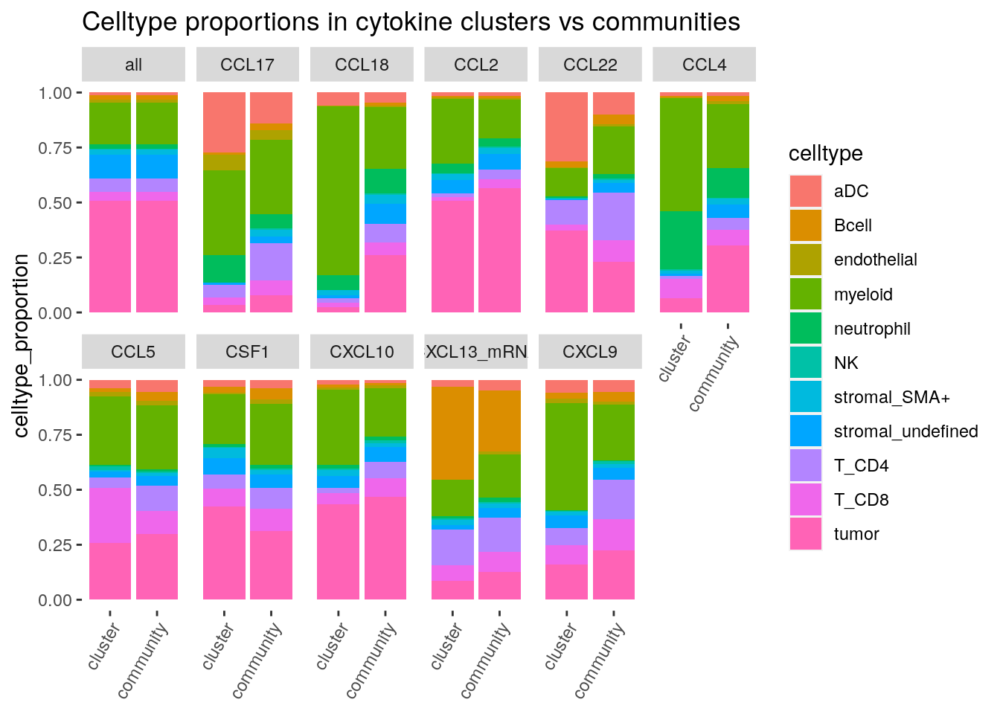
CCL18 - Treg association
# Simple frequencies
sce_protein <- readRDS("output/ProteinPanel/sce_ProteinPanel_subtypes_all.rds")
sce_stromal <- sce_protein[, which(sce_protein$cell_class == "stroma")]
prop_Treg <- prop.table(table(sce_stromal$ImageNumber, sce_stromal$subtype), margin = 1)[,"Treg"]
CCL18_clust_cellnr <- rowSums(table(sce$ImageNumber, sce$ccl18only_clust)[, -1])
Treg_CCL18 <- as.data.frame(cbind(prop_Treg, CCL18_clust_cellnr))
ggplot(Treg_CCL18, aes(prop_Treg, CCL18_clust_cellnr)) +
geom_point()+
geom_smooth(method = lm, color = "black", se=FALSE)+
stat_cor(method="spearman")+
theme(axis.line.x = element_line(colour = "black", size = 0.25),
axis.line.y = element_line(colour = "black", size = 0.25),
panel.grid.major = element_blank(),
panel.grid.minor = element_blank(),
panel.border = element_rect(colour = "black", fill=NA, size=1),
panel.background = element_blank())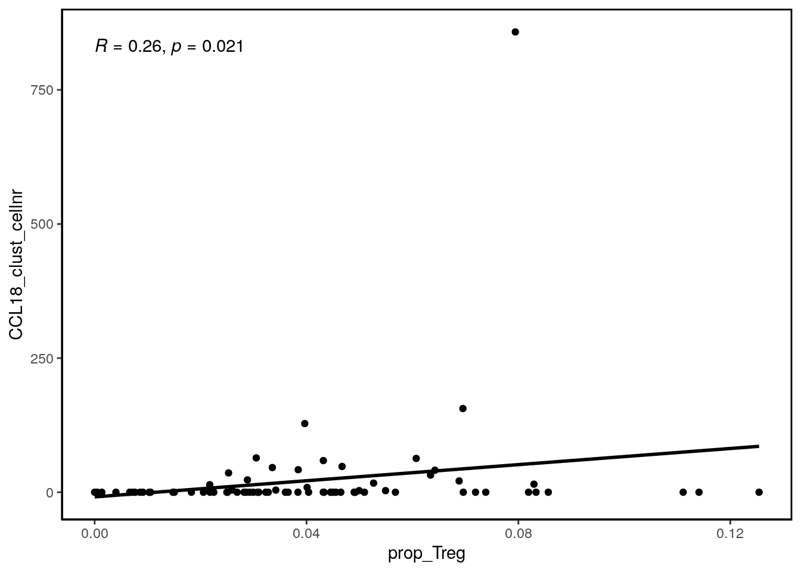
# See if the same holds true for general cytokine expression
cytokine_cellnr <- table(sce$ImageNumber, sce$cytokine)[,2]
cytokine_clust_cellnr <- rowSums(table(sce$ImageNumber, sce$cytokine_cluster)[, -1])
Treg_cytokine <- as.data.frame(cbind(prop_Treg, cytokine_clust_cellnr))
ggplot(Treg_cytokine, aes(prop_Treg, cytokine_clust_cellnr)) +
geom_point()+
geom_smooth(method = lm, color = "black", se=FALSE)+
stat_cor(method="spearman")+
theme(axis.line.x = element_line(colour = "black", size = 0.25),
axis.line.y = element_line(colour = "black", size = 0.25),
panel.grid.major = element_blank(),
panel.grid.minor = element_blank(),
panel.border = element_rect(colour = "black", fill=NA, size=1),
panel.background = element_blank())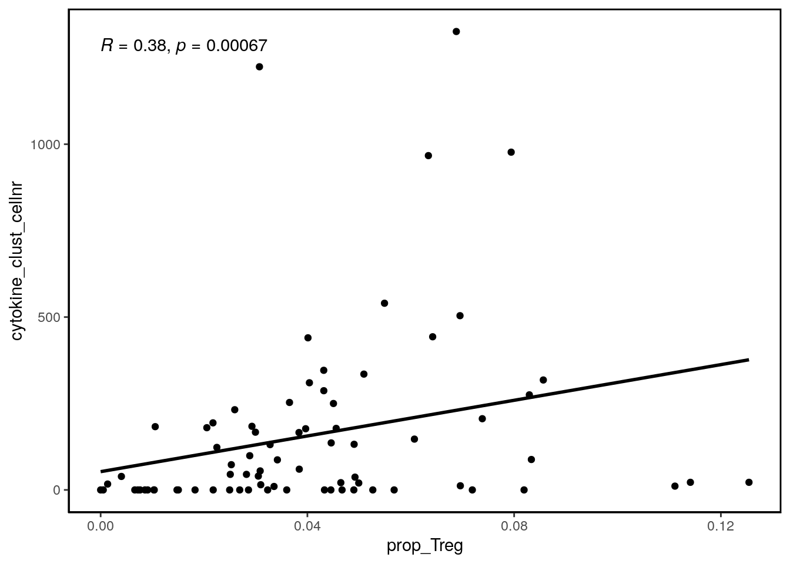
Cytokine environments -> apply to matched ROIs
Define “cytokine environments” by extending the respective cytokine communities by 10um (concave hull), thus allowing for slight mismatches between the different ROIs.
Extract coordinates for these environments and lay them over the matched ROIs from the protein panel.
Check enrichment of celltypes and subtypes in the overlaid environments for different cytokines.
The goal is to investigate association of cytokine expression with celltypes that can only be defined in the Protein Panel (e.g. regulatory T cells).
# read in SCE from protein panel
sce_protein <- readRDS("output/ProteinPanel/sce_ProteinPanel_subtypes_all.rds")
sce_TNK <- sce_protein[,which(sce_protein$celltype == "T_NK")]
# ColData column names for cytokine communities
comm_colnames <- c(colnames(colData(sce))[grep("only_comm", colnames(colData(sce)))],"cytokine_community")
# Create empty cell type enrichment tables
enrichment <- data.frame(matrix(ncol=length(levels(as.factor(sce_protein$subtype))), nrow = 0))
colnames(enrichment) = levels(as.factor(sce_protein$subtype))
enrichment_TNK <- data.frame(matrix(ncol=length(levels(as.factor(sce_TNK$subtype))), nrow = 0))
colnames(enrichment_TNK) = levels(as.factor(sce_TNK$subtype))
# Set distance parameter
distance = 10
for (k in comm_colnames) {
input_df_RNA <- data.frame(cellID = sce$cellID,
X = sce$Center_X,
Y = sce$Center_Y,
ImageNumber = sce$ImageNumber,
cluster = colData(sce)[,k])
input_df_protein <- data.frame(cellID = sce_protein$cellID,
X = sce_protein$Center_X,
Y = sce_protein$Center_Y,
ImageNumber = sce_protein$ImageNumber)
# Create empty dataframe to collect all cells in the respective cytokine environment
k_env_cells <- data.frame(matrix(ncol=ncol(input_df_protein), nrow = 0))
colnames(k_env_cells) = colnames(input_df_protein)
for (j in unique(input_df_RNA$ImageNumber)) {
# create multipoint object with all cells from one image (for RNA panel)
cell_coord = as.matrix(input_df_RNA[input_df_RNA$ImageNumber == j,2:3])
rownames(cell_coord) = input_df_RNA[input_df_RNA$ImageNumber == j,1]
cells = sf::st_multipoint(cell_coord)
cells_sfc = sf::st_cast(sf::st_sfc(cells), "POINT")
# create multipoint object with all cells from one image (for Protein panel)
cell_coord_protein = as.matrix(input_df_protein[input_df_protein$ImageNumber == j,2:3])
rownames(cell_coord_protein) = input_df_protein[input_df_protein$ImageNumber == j,1]
cells_protein = sf::st_multipoint(cell_coord_protein)
cells_sfc_protein = sf::st_cast(sf::st_sfc(cells_protein), "POINT")
# create data.frame for all environment cells for the respective image
environment_cells = data.frame(matrix(ncol=ncol(input_df_protein), nrow = 0))
colnames(environment_cells) = colnames(input_df_protein)
# create list for plots/polygon objects
polygon_plots = ggplot()
# loop through all clusters of k in image j and extract coordinates of enlarged polygon
for(i in unique(input_df_RNA[input_df_RNA$ImageNumber == j & input_df_RNA$cluster != 0,]$cluster)){
cur_df <- input_df_RNA[input_df_RNA$cluster == i & input_df_RNA$cluster != 0,]
## Compute concave hull for each cluster
if (nrow(cur_df) > 2){
coords <- as.matrix(cbind(cur_df$X, cur_df$Y))
hull = data.table::as.data.table(concaveman::concaveman(coords, concavity = 1))
colnames(hull) <- c("X", "Y")
# return common rows between input and the hull
# first, we need to round the digits of cur_df since concaveman does not return full-length coordinates
# (see github issue https://github.com/joelgombin/concaveman/issues/13)
# is obsolete once the bug is fixed
cur_df_2 <- data.table::copy(cur_df)
cur_df_2$X <- round(cur_df_2$X, digits = 4)
cur_df_2$Y <- round(cur_df_2$Y, digits = 4)
# create polygon object
polygon = sf::st_polygon(list(as.matrix(hull)))
}
# buffer/enlarge polygon by "distance" pixels
polygon_buff = sf::st_buffer(polygon, distance)
polygon_buff_sfc = sf::st_sfc(polygon_buff)
polygon_plots <- polygon_plots +
geom_sf(data = polygon, fill = NA, size = 4, col = "deepskyblue2") +
geom_sf(data = polygon_buff_sfc, fill = NA, size=4, col = "blue")
# return coordinates of the enlarged polygon
enlarged_coordinates = as.data.frame(polygon_buff[1])
# define cells within this enlarged polygon in the matched ROI from the protein panel
intersect = sf::st_intersects(polygon_buff_sfc, cells_sfc_protein)
intersect = rownames(as.data.frame(cells_protein[intersect[[1]],]))
environment_cells = rbind(environment_cells, input_df_protein[input_df_protein$cellID %in% intersect,])
}
# Add cells to the data frame for k
k_env_cells = rbind(k_env_cells, environment_cells)
}
#Calculate enrichment of celltypes in environment k
sce_k_env <- sce_protein[,unique(k_env_cells$cellID)]
enrichment[k,] <- prop.table(table(sce_k_env$subtype)) / prop.table(table(sce_protein$subtype))
sce_k_env_TNK <- sce_k_env[,which(sce_k_env$celltype == "T_NK")]
enrichment_TNK[k,] <- prop.table(table(sce_k_env_TNK$subtype)) / prop.table(table(sce_TNK$subtype))
}Plot celltype enrichments in cytokine environments
# Plot general enrichment of cell subtypes
enrichment$cluster <- rownames(enrichment)
enrichment_long <- pivot_longer(enrichment, 1:20, names_to = "celltype", values_to = "enrichment")
ggplot(enrichment_long, aes(celltype, enrichment, fill = celltype))+
geom_bar(stat="identity")+
facet_wrap(~cluster, scales = "free")+
theme(panel.background = element_blank(),
axis.text.x = element_blank(),
panel.border = element_rect(color = "black", fill = NA, size = 1),
strip.background = element_blank(),
legend.background = element_blank())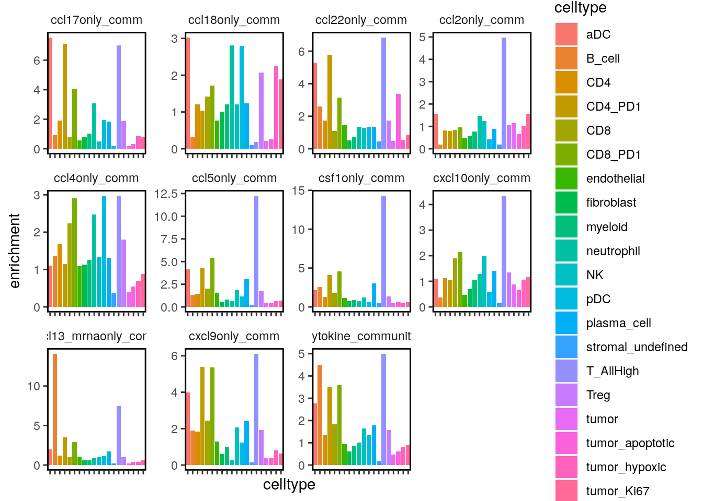
# Plot enrichment of Tregs in CCL18 communities vs general cytokine communities
enrichment_sub <- enrichment_long %>% filter(cluster %in% c("ccl18only_comm", "cytokine_community"))
ggplot(enrichment_sub, aes(cluster, enrichment, fill = cluster))+
geom_bar(stat="identity")+
facet_wrap(~celltype, scales = "free")+
theme(panel.background = element_blank(),
axis.text.x = element_blank(),
panel.border = element_rect(color = "black", fill = NA, size = 1),
strip.background = element_blank(),
legend.background = element_blank())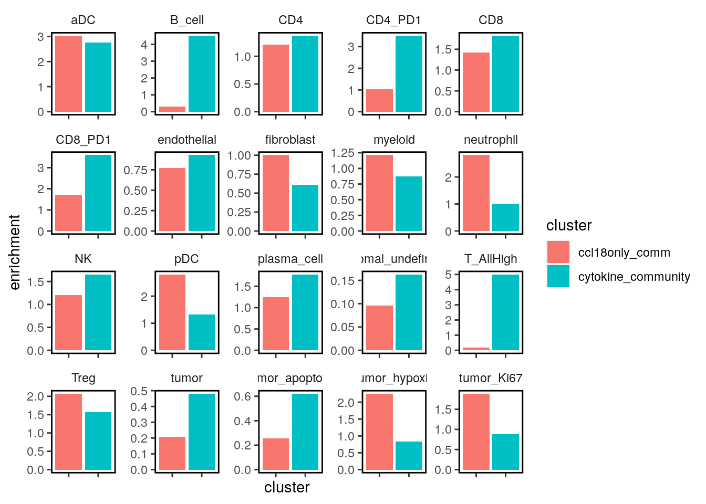
# Plot enrichment of T cell subtypes OUT OF ALL TNK CELLS in all cytokine communities
enrichment_TNK$cluster <- rownames(enrichment_TNK)
enrichment_long_TNK <- pivot_longer(enrichment_TNK, 1:7, names_to = "subtype", values_to = "enrichment")
ggplot(enrichment_long_TNK, aes(cluster, enrichment, fill = cluster))+
geom_bar(stat="identity")+
facet_wrap(~subtype, scales = "free", ncol = 4)+
theme(panel.background = element_blank(),
axis.text.x = element_blank(),
panel.border = element_rect(color = "black", fill = NA, size = 1),
strip.background = element_blank(),
legend.background = element_blank())+
geom_hline(yintercept = 1, linetype = "dashed")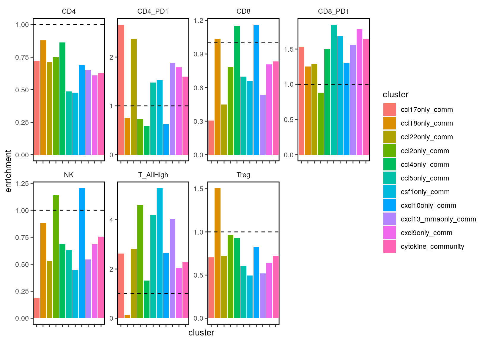
sessionInfo()R version 4.0.2 (2020-06-22)
Platform: x86_64-pc-linux-gnu (64-bit)
Running under: Ubuntu 20.04 LTS
Matrix products: default
BLAS/LAPACK: /usr/lib/x86_64-linux-gnu/openblas-openmp/libopenblasp-r0.3.8.so
locale:
[1] LC_CTYPE=en_US.UTF-8 LC_NUMERIC=C
[3] LC_TIME=en_US.UTF-8 LC_COLLATE=en_US.UTF-8
[5] LC_MONETARY=en_US.UTF-8 LC_MESSAGES=C
[7] LC_PAPER=en_US.UTF-8 LC_NAME=C
[9] LC_ADDRESS=C LC_TELEPHONE=C
[11] LC_MEASUREMENT=en_US.UTF-8 LC_IDENTIFICATION=C
attached base packages:
[1] parallel stats4 stats graphics grDevices utils datasets
[8] methods base
other attached packages:
[1] cytomapper_1.0.0 EBImage_4.30.0
[3] ggpubr_0.4.0 concaveman_1.1.0
[5] RANN_2.6.1 sf_0.9-6
[7] sp_1.4-2 viridis_0.5.1
[9] viridisLite_0.3.0 forcats_0.5.0
[11] stringr_1.4.0 dplyr_1.0.1
[13] purrr_0.3.4 readr_1.3.1
[15] tidyr_1.1.1 tibble_3.0.3
[17] tidyverse_1.3.0 ggridges_0.5.2
[19] cowplot_1.0.0 reshape2_1.4.4
[21] igraph_1.2.5 scater_1.16.2
[23] ggplot2_3.3.2 SingleCellExperiment_1.10.1
[25] SummarizedExperiment_1.18.2 DelayedArray_0.14.1
[27] matrixStats_0.56.0 Biobase_2.48.0
[29] GenomicRanges_1.40.0 GenomeInfoDb_1.24.2
[31] IRanges_2.22.2 S4Vectors_0.26.1
[33] BiocGenerics_0.34.0 workflowr_1.6.2
loaded via a namespace (and not attached):
[1] readxl_1.3.1 backports_1.1.8
[3] plyr_1.8.6 splines_4.0.2
[5] BiocParallel_1.22.0 digest_0.6.25
[7] htmltools_0.5.0 tiff_0.1-5
[9] fansi_0.4.1 magrittr_1.5
[11] openxlsx_4.1.5 modelr_0.1.8
[13] jpeg_0.1-8.1 colorspace_1.4-1
[15] blob_1.2.1 rvest_0.3.6
[17] haven_2.3.1 xfun_0.16
[19] crayon_1.3.4 RCurl_1.98-1.2
[21] jsonlite_1.7.0 glue_1.4.1
[23] gtable_0.3.0 zlibbioc_1.34.0
[25] XVector_0.28.0 V8_3.3.1
[27] car_3.0-8 BiocSingular_1.4.0
[29] abind_1.4-5 scales_1.1.1
[31] DBI_1.1.0 rstatix_0.6.0
[33] Rcpp_1.0.5 units_0.6-7
[35] foreign_0.8-80 rsvd_1.0.3
[37] htmlwidgets_1.5.1 httr_1.4.2
[39] RColorBrewer_1.1-2 ellipsis_0.3.1
[41] pkgconfig_2.0.3 farver_2.0.3
[43] dbplyr_1.4.4 locfit_1.5-9.4
[45] tidyselect_1.1.0 labeling_0.3
[47] rlang_0.4.7 later_1.1.0.1
[49] munsell_0.5.0 cellranger_1.1.0
[51] tools_4.0.2 cli_2.0.2
[53] generics_0.0.2 broom_0.7.0
[55] evaluate_0.14 fftwtools_0.9-8
[57] yaml_2.2.1 knitr_1.29
[59] fs_1.5.0 zip_2.0.4
[61] nlme_3.1-148 whisker_0.4
[63] xml2_1.3.2 compiler_4.0.2
[65] rstudioapi_0.11 beeswarm_0.2.3
[67] curl_4.3 png_0.1-7
[69] e1071_1.7-3 ggsignif_0.6.0
[71] reprex_0.3.0 stringi_1.4.6
[73] lattice_0.20-41 Matrix_1.2-18
[75] classInt_0.4-3 vctrs_0.3.2
[77] pillar_1.4.6 lifecycle_0.2.0
[79] BiocNeighbors_1.6.0 data.table_1.13.0
[81] bitops_1.0-6 irlba_2.3.3
[83] raster_3.3-13 httpuv_1.5.4
[85] R6_2.4.1 promises_1.1.1
[87] KernSmooth_2.23-17 gridExtra_2.3
[89] rio_0.5.16 vipor_0.4.5
[91] codetools_0.2-16 assertthat_0.2.1
[93] rprojroot_1.3-2 withr_2.2.0
[95] GenomeInfoDbData_1.2.3 mgcv_1.8-31
[97] hms_0.5.3 grid_4.0.2
[99] class_7.3-17 rmarkdown_2.3
[101] DelayedMatrixStats_1.10.1 carData_3.0-4
[103] git2r_0.27.1 lubridate_1.7.9
[105] ggbeeswarm_0.6.0